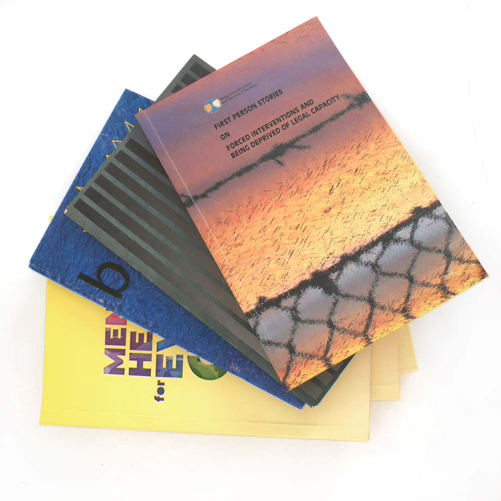
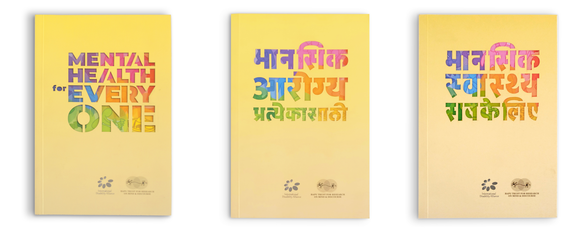
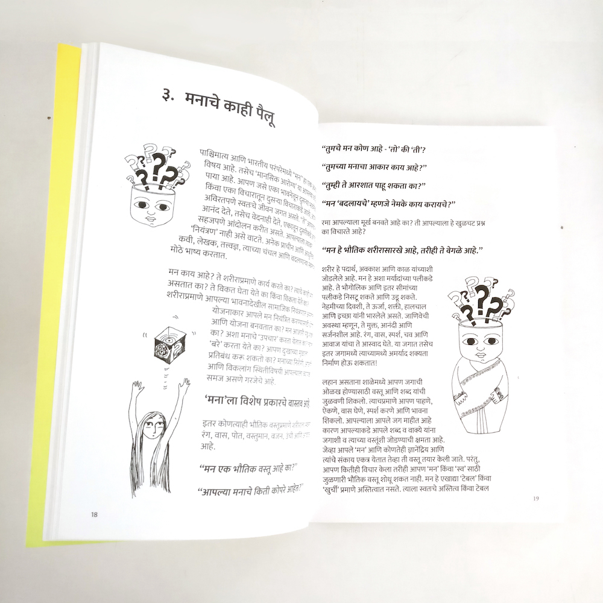
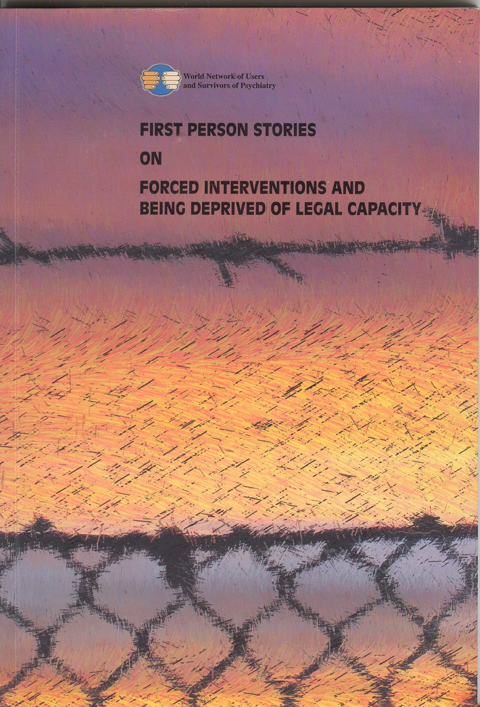
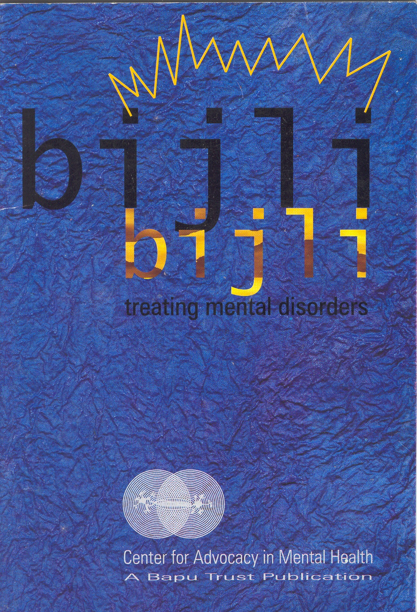

A set of books developed over the years for Bapu Trust for Research on Mind and Discourse, dealing with various pressing problems in mental health.


The latest set of books are in multiple languages, English, Hindi and Marathi, which reach a wider audience. It was printed on 100% recycled paper.
The layout and illustrations help in breaking down the text into understandable chunks of information, making it easier for even laypeople to understand and apply.


A number of books were designed along with illustrations which helped break down complex text, making it easier to understand.
See more work by Bapu Trust at baputrust.com
See more work by Bapu Trust at baputrust.com


next project:
pune heritage brochure
pune heritage brochure